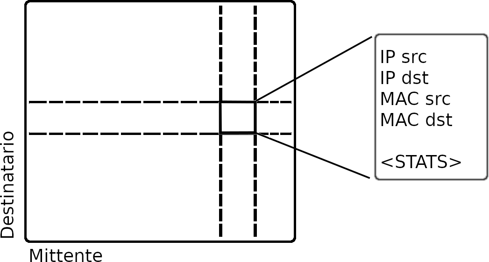

La struttura dati in questione è nata con l'intento di monitorare la comunicazione, nel particolare il Protocollo ARP , tra dispositivi di varia natura, al fine di rilevare pattern utili per identificare i possessori di tali dispositivi.
L'intero lavoro è stato realizzato all'interno del software open-source ntopng: sono state create e/o estese componenti a partire dai livelli più bassi (engine, C++) fino al livello presentazione (script lua e javascript per l'interfaccia grafica).
Importante! Ricorda di attivare la matrice ARP dalle preferenze di ntopng:
Accedere all'interfaccia web di ntopng (di default, inserire "localhost:3000" nella URL del browser)
Selezionare l'ingranaggio in alto a destra della pagina
Nel riquadro preferenze selezionare la voce Misc
Nella sezione hosts, spuntare ARP Matrix
La matrice è stata concepita con l'idea di raccogliere statistiche riguardanti la comunicazione tra dispositivi: ogni cella contiene contatori relativi allo scambio di messaggi tra due dispositivi specifici, ed è infatti identificata attraverso gli indirizzi di rete utlilzzati da tali dispositivi (IP e MAC)
La matrice ARP è stata implementata sotto forma di tabella hash bidirezionale. Di seguito è presente la documentazione, mentre il codice è visionabile QUI e QUI.
La matrice ARP è utilizzabile a livello di scripting Lua attraverso le API di ntopng, è infatti possibile ottenerla invocando "interface.getArpStatsMatrixInfo()". tale funzione restituirà al chiamante una tabella Lua, indicizzata per IP, contenente i contatori di pacchetti ARP (request/response) del mittente e del destinatario. È importante far presente che, per motivi di prestazioni, dopo un certo periodo di inattività di un elemento della matrice (cioè i due host non comunicano da un pò), non è garantito che tale elemento resti in memoria.
Per ulteriori informazioni riguardo le politiche di gestione della matrice, visionare, oltre al codice mensionato sopra, anche le classi padri: GenericHash e GenericHashEntry.
File Interessati
Per quanto riguarda l'architetturadi ntiong,questi file si trovano a livello engine: si intende il livello più basso e performante del software, scritto in C++, in cui si effettuano le operazioni computazionalmente complesse e pesanti.ArpStatsHashMatrix.cpp e ArpStatsMatrixElement.cpp: contengono l'implementazione della matrice ARP ei suoi elementi;
ArpStatsMatrixElement.cpp; file in cui viengono gestiti il flussi di pacchetti provenienti dall'interfaccia di rete; è qui che la matrice viene popolata, allocata e gestita.
LuaEngine.cpp; file grazie al quale la matrice viene esposta come API appartenente alla classe Interface
Funzioni e strutture
All'interno di ArpStatsHashMatrix sono presenti:
typedef struct { lua_State* vm; u_int64_t entry_id; } print_all_arp_stats_data_t;
Struttura creata allo scopo di "stampare" nello stack della VM LUA la MAtrice ARP
static bool print_all_arp_stats(GenericHashEntry *e, void *user_data, bool *matched)
Popola lo stack della VM LUA con la Matrice ARPArpStatsHashMatrix::ArpStatsHashMatrix(NetworkInterface *_iface, u_int _num_hashes, u_int _max_hash_size)
Metodo costruttore della ArpStatsHashMatrix
Parametri:ArpStatsMatrixElement* ArpStatsHashMatrix::get (const u_int8_t _src_mac[6], const u_int32_t _src_ip, const u_int32_t _dst_ip, bool * const src2dst)
Metodo getter per i singoli elementi della matrice
Parametri:void ArpStatsHashMatrix::lua(lua_State* vm)
Alloca e popola lo stack della VM LUA
Parametri:All'interno di ArpStatsMatrixElement sono presenti:
ArpStatsMatrixElement::ArpStatsMatrixElement(NetworkInterface *_iface, const u_int8_t _src_mac[6], const u_int8_t _dst_mac[6], const u_int32_t _src_ip, const u_int32_t _dst_ip)
Metodo Costruttore di un elemento della matrice ARPbool ArpStatsMatrixElement::equal(const u_int8_t _src_mac[6], const u_int32_t _src_ip, const u_int32_t _dst_ip, bool * const src2dst)
Funzione per comparare due elementi della matrice: compara gli indirizzi di rete che identificano un ArpStatsMatrixElement
Parametri:u_int32_t ArpStatsMatrixElement::key()
Funzione hash cheindicizza la tabella hash: è la somma dei byte degli indirizzi IP del mittente e destinatario
Risultato: intero rappresentatnte la chiave hash dell'elementovoid ArpStatsMatrixElement::print(char *msg)
Print a scopo debbugging: stampa sul terminale gli indirizzi di rete identificativi dell'elemento
void ArpStatsMatrixElement::lua(lua_State* vm)
Alloca e popola lo stack della VM LUA
Parametri:All'interno di LuaEngine sono presenti:
static int ntop_get_arp_matrix_info(lua_State*vm)
Funzione che interfaccia il livelli di scripting LUA con quello engine: la chiamata all'API
Parametri:All'interno di NetworkInterface sono presenti
bool NetworkInterface::getArpStatsMatrixInfo(lua_State* vm)
Funzione per invocare il passaggio a tabella LUA della ARP matrix
Parametri:u_int32_t NetworkInterface::getArpHashMatrixSize()
Getter per la dimensione della matrice
Risultato: dimensione della tabella hashu_int NetworkInterface::getNumArpStatsMatrixElements()
Getter per il numero di elementi della tabella hash
Risultato:void NetworkInterface::lua_hash_tables_stats(lua_State *vm)
Funzione per invocare il passaggio a tabella LUA delle stats di tutte le tabelle hash dell'interfaccia attiva
Parametri:ArpStatsMatrixElement* NetworkInterface::getArpHashMatrixElement(const u_int8_t _src_mac[6], const u_int8_t _dst_mac[6], const u_int32_t _src_ip, const u_int32_t _dst_ip, bool * const src2dst)
Metodo getter: in caso l'elemento non sia presente, lo crea
Parametri:
Inolre, sempre all'intero di NetworkInterface, per quanto riguarda le politiche di gestione:
- in "deleteDataStructures()" viene eliminata la arp_hash_matrix
- in "cleanup()" viene fatta la cleanup della arp_hash_matrix
- in "purgeIdleHostsMacsASesVlans()" viene fatta la purge della arp_hash_matrix
- in "allocateStructures()" viene allocata la arp_hash_matrix
Heatmap
All'interno dell'interfaccia di ntopng è possibile avere una rappresentazione grafica della matrice ARPget_arp_matrix_data.lua; file incaricato di trasformare i dati della matrice ARP in dati rappresentabili dal grafico
heatmap.js, file in cui il grafico viene generato
È possibile visualizzare il grafico, una volta attivata la ARP Matrix, tramite la Web GUI cliccando sul Tab "Hosts", nell'header di pagina, e poi "ARP Matrix Talkers"